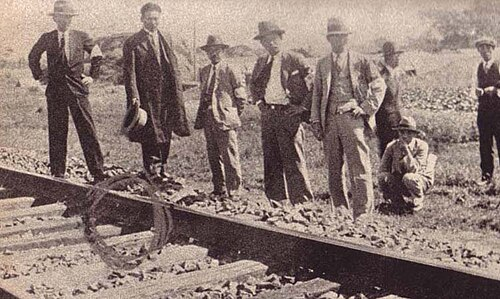

FILE TFF-03 // 1931 MANCHURIA
The Mukden Incident


CALIBRATED CONCLUSION: A staged incident is strongly supported; the chain of command remains incompletely documented.
Specific allegation
Claim: Kwantung Army officers staged a small railway explosion, then blamed Chinese forces to justify occupying Manchuria.
Event chronology
A small blast damaged the South Manchuria Railway near Mukden on 18 September. Japanese troops launched operations that expanded into occupation and establishment of Manchukuo; the rail line reportedly remained usable.
Evidentiary record
The League of Nations Lytton Commission documented the blast and occupation. Later Japanese records and scholarship attribute the explosion to officers whose military campaign was already prepared.
Independent and contrary evidence
The staged-pretext account is widely accepted. The precise authorization chain and Tokyo’s advance knowledge are less clear; Japan’s government blamed Chinese forces at the time.
Known uncertainty
The League inquiry had limited access to military records and diplomatic constraints. Japan’s expansionist plans predated the blast, so its significance should not be exaggerated.
Falsifiable evidence requirements
Contemporaneous orders, rail inspections, or communications could clarify who acted and who knew. Reliable evidence of a Chinese sabotage team would challenge the established account.
Sources and limitations
- League of Nations, Lytton Commission reportUsed to document the contemporary inquiry and Japanese military context in the primary record. Limitation: it does not settle restricted access and the difference between local action and state policy.
- Japan National Diet Library, Modern Japan in archivesUsed to compare the chronology and interpretation of the contemporary inquiry and Japanese military context. Limitation: conclusions depend on restricted access and the difference between local action and state policy.
- Louise Young, Japan’s Total EmpireUsed as an independent check on the contemporary inquiry and Japanese military context. Limitation: it cannot alone establish restricted access and the difference between local action and state policy.